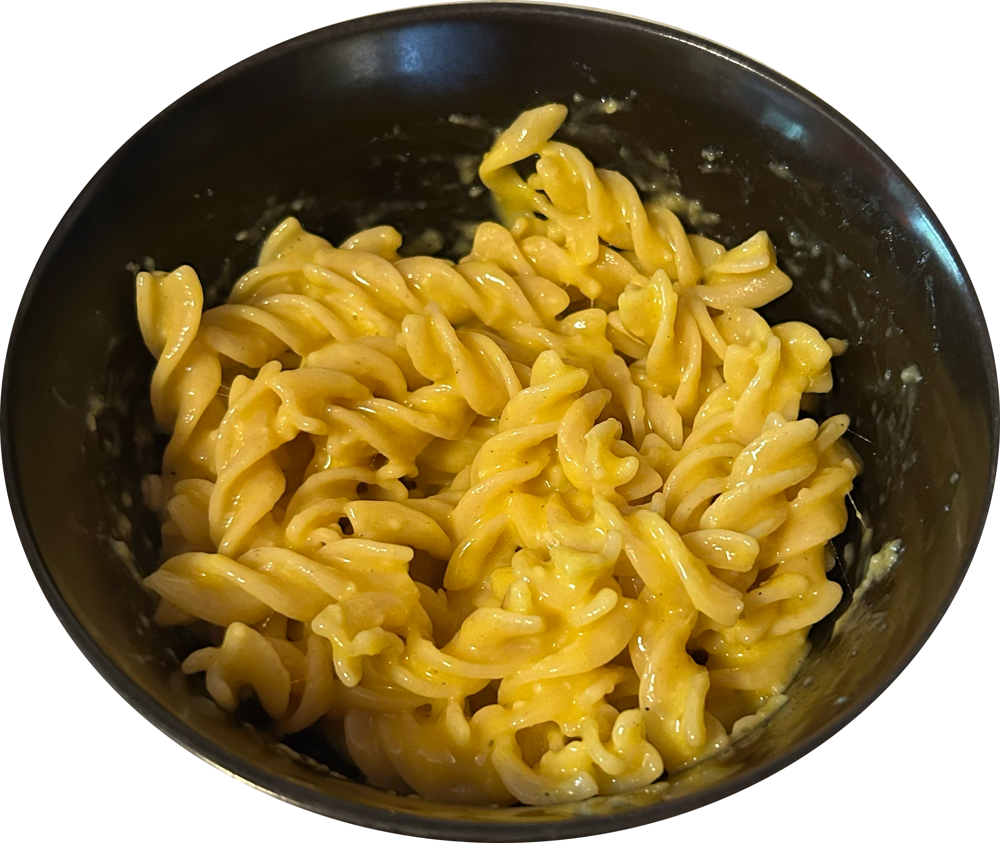
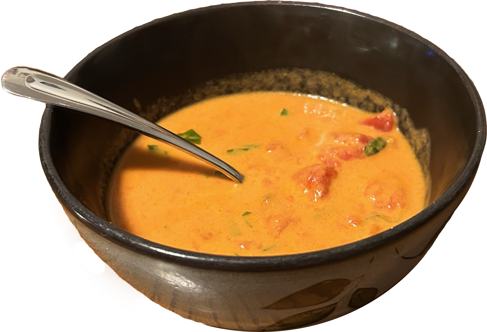

Carbonara
Carbonara is a pasta dish made with a creamy sauce of parmesean and egg. This recipe is for a single serving.

Ingredients
- 1/3 cup grated parmesean
- 1 cup rotini pasta
- 2 eggs (one whole egg and one egg yolk)
- Pepper
Equipment
- Pot
- Cooking Spoon
- Collander
- Egg Separator
- Whisk
- Mixing Bowls
- Measuring cups
Steps
- Fill pot 3/4 of the way full with water. Place on stove and wait for water to boil.
- Add pasta and cook for 10 minutes, stirring occasionally.
- While the pasta is cooking, use the egg separator to separate the egg yolk from the whites. Discard the whites from one egg. Use both egg yolk and whites for the second egg.
- Begin adding grated parmesean into the eggs, whisking them together until the mixture becomes thick.
- When the pasta is done cooking, strain the water then place the cooked pasta back into the pot.
- Pour the egg and parmesean mixture onto the cooked pasta and mix. The heat from the pasta will slowly cook the egg while keeping the mixture creamy.
- Put pasta into a bowl and sprinkle pepper on top.
Tips
- Check if the pasta is cooked to your liking by trying one piece before straining all the pasta.
- You can add 1/8 teaspoon of garlic or onion powder into the egg mixture for more flavor.
Tomato Soup
This tomato soup is rich and creamy with delicious bits of tomato and basil. This recipe makes approximately 12 servings.

Ingredients
- 28 oz crushed tomatoes
- 28 oz diced tomatoes
- 14 oz chicken broth
- 1 tbsp crushed garlic
- 2 tbsp sugar
- 1/3 cup butter
- 1 cup heavy cream
- 15 basil leaves
Equipment
- Pot
- Cooking Spoon
- Measuring Cups and Spoons
- Knife
Steps
- Add diced and crushed tomatoes, chicken broth, and garlic into a pot. Bring to a boil for 10 minutes.
- Set stove to low heat and stir in sugar and butter, mixing until dissolved.
- Slowly pour in heavy cream while stirring until all is combined.
- Chop basil leaves and stir into the soup.
Tips
- Try adding croutons and parmesean cheese to garnish your soup.
- Pair soup with a grilled cheese sandwich.